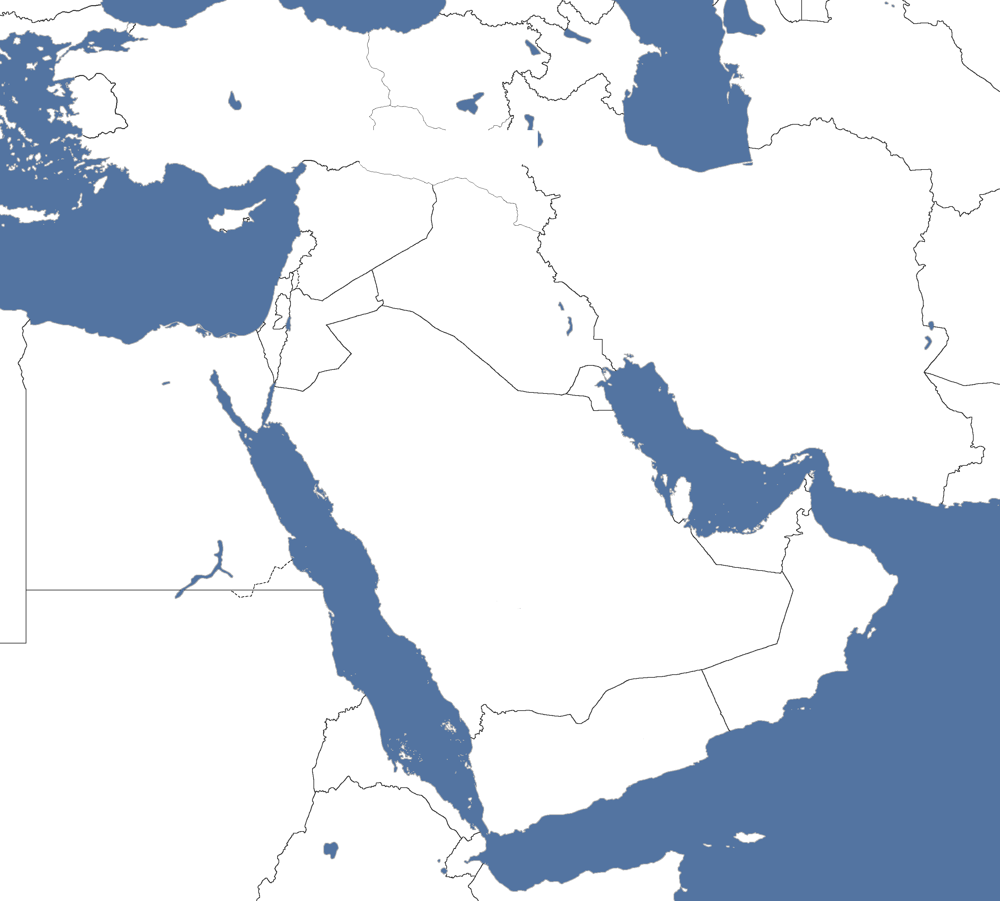

| Lesson / Assessment Title | Effort | Level | Teacher Comments |
|---|---|---|---|
| L1: KT1: Geography of the Middle East | |||
| L2: KT1.1: The End of the British Mandate and the Creation of Israel, 1945–1949 | |||
| L3: KT1.2: The Aftermath of the 1948–49 War | |||
| L4: KT1.3: Increased Tension, 1955–1963 | |||
| Final Unit Grade: |
Understanding the geography of the Middle East is the essential first step to understanding its history. The borders of the modern Middle East were largely drawn by Britain and France following the collapse of the Ottoman Empire at the end of the First World War. These artificially imposed borders laid the groundwork for decades of instability.
At the heart of the conflict are several highly contested regions: the Gaza Strip, the West Bank, the Golan Heights, and the Sinai Peninsula. Additionally, control over strategic waterways—like the Suez Canal, the Straits of Tiran, and the River Jordan—has repeatedly triggered military escalation.
Reflect on today's learning and answer your teacher's final challenge.

Write a historically accurate sentence connecting two terms from the glossary box below.
Q2. What was the 'dual obligation' that Britain faced under the League of Nations Mandate of Palestine? [p. 6]
Q3. Identify two reasons why Foreign Secretary Ernest Bevin set a strict immigration quota of 1,500 Jewish immigrants per month. [p. 6]
Q4. What was the 'Jewish Insurgency' and which three Zionist groups united to launch it? [p. 7]
Q5. Describe the deadliest act of the insurgency on 22 July 1946 and explain its intended target. [p. 7]
Q6. How did the British public react to the 'Sergeants Affair', and what was the political result? [p. 7]
Q7. How did the United Nations Partition Plan (Resolution 181) divide the land of Palestine, and what was the reaction of the two communities? [p. 8]
Q8. What was the impact of the Deir Yassin massacre on the Palestinian Arab population in April 1948? [p. 8]
Q9. Describe the tactical advantage Israel gained during the first UN truce in June 1948. [p. 9]
Q10. Explain the conflicting historical views regarding the displacement of over 700,000 Palestinians during the 1948 war. [p. 9]
Prompt: If you were the British government in 1945, exhausted by WWII and facing attacks from Jewish paramilitaries, what would you have done with the Mandate?
Reflect on today's learning and answer your teacher's final challenge.
Write a clear definition and a historically accurate sentence for the term: Green Line
Q1. What happened to the remaining portions of mandate Palestine (the West Bank and Gaza Strip) following the 1948-49 war? [p. 13]
Q2. How did the United Nations attempt to cope with the vast humanitarian emergency created by the displacement of 700,000 Palestinian Arabs? [p. 13]
Q3. Why did both Israel and the Arab host states refuse to permanently integrate the Palestinian refugees into their societies? [p. 14]
Q4. Why was the establishment of the Israeli Defence Forces (IDF) in May 1948 highly significant for Israel's internal politics and national security? [p. 14]
Q5. Explain the demographic impact of the 1950 Law of Return on the new State of Israel. [p. 14]
Q6. Why did President authorise massive emergency loans and grants to Israel in its early years? [p. 14]
Q7. Describe two ways that Egypt attempted to strangle Israel economically and militarily in the early 1950s. [p. 15]
Q8. How did David Ben-Gurion attempt to deter Fedayeen border raids, and what was the consequence? [p. 15]
Q9. Explain one consequence of the territorial changes following the 1948–49 Arab-Israeli war. (4 marks) [p. 15]
Prompt: Why do you think the well-equipped Arab armies were defeated by the newly formed Israeli Defense Forces?
Reflect on today's learning and answer your teacher's final challenge.
Fill in the blanks using the vocabulary words below.
Driven by the ideology of __________________, sought to modernize Egypt. Following the __________________, the West refused to fund his dam project. In retaliation, Nasser announced the __________________ of the Suez Canal. This led to the secret __________________ where Israel, Britain, and France invaded Egypt. The conflict ended with the deployment of __________________ peacekeepers in the Sinai.
Q1. What were Gamal Abdel Nasser’s immediate political and domestic objectives after taking power in Egypt? [p. 18]
Q2. Why did Israel launch a devastating reprisal raid on the Gaza Strip on 28 February 1955, and what was the result? [p. 19]
Q3. What was the significance of the 1955 Czech Arms Deal for the balance of power in the Middle East? [p. 21]
Q4. How did President Nasser respond when the United States and Great Britain abruptly withdrew their funding for the Aswan High Dam? [p. 21]
Q5. What was the secret Protocol of Sèvres in October 1956? [p. 21]
Q6. Explain how Britain and France planned to use an Israeli invasion of the Sinai as a pretext to retake the Suez Canal. [p. 23]
Q7. Why did the Anglo-French-Israeli conspiracy backfire and end in a humiliating retreat? [p. 23]
Q8. Identify two vital security guarantees Israel received in exchange for withdrawing its forces from the Sinai Peninsula. [p. 24]
Q9. Explain one consequence of the nationalisation of the Suez Canal in 1956. (4 marks) [p. 24]
Prompt: Why was the Suez Canal so important to Britain and France that they were willing to go to war over it?
Reflect on today's learning and answer your teacher's final challenge.
Choose an exam question from the bank below and answer it on the blank lined pages that follow.
Q11. Write a narrative account analysing the key events of 1945–48 which led to the creation of Israel. (8 marks)
Q10. Explain one consequence of the territorial changes following the 1948–49 Arab-Israeli war. (4 marks)
Q10. Explain one consequence of the Suez Crisis (1956) for the Middle East. (4 marks)